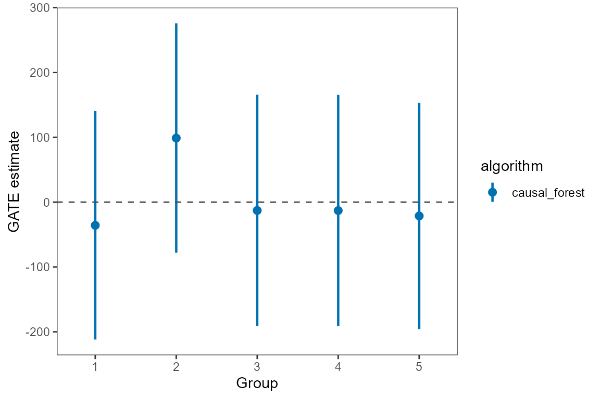
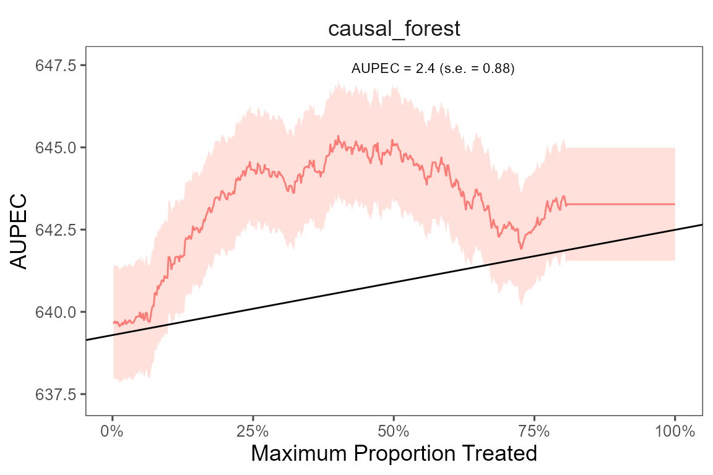

This is an example using the star dataset (for more
information about the dataset, please use ?star).
We start with a simple example with one outcome variable (writing scores) and one machine learning algorithm (causal forest). Then we move to incoporate multiple outcomes and compare model performances with several machine learning algorithms.
To begin, we load the dataset and specify the outcome variable and
covariates to be used in the model. Next, we utilize a random forest
algorithm to develop an Individualized Treatment Rule (ITR) for
estimating the varied impacts of small class sizes on students’ writing
scores. Since the treatment is often costly for most policy programs, we
consider a case with 20% budget constraint (budget = 0.2).
The model will identify the top 20% of units who benefit from the
treatment most and assign them to with the treatment. We train the model
through sample splitting, with the split_ratio between the
train and test sets determined by the split_ratio argument.
Specifically, we allocate 70% of the data to train the model, while the
remaining 30% is used as testing data (split_ratio =
0.7).
library(dplyr)
library(evalITR)
load("../data/star.rda")
# specifying the outcome
outcomes <- "g3tlangss"
# specifying the treatment
treatment <- "treatment"
# specifying the data (remove other outcomes)
star_data <- star %>% dplyr::select(-c(g3treadss,g3tmathss))
# specifying the formula
user_formula <- as.formula(
"g3tlangss ~ treatment + gender + race + birthmonth +
birthyear + SCHLURBN + GRDRANGE + GKENRMNT + GKFRLNCH +
GKBUSED + GKWHITE ")
# estimate ITR
fit <- estimate_itr(
treatment = treatment,
form = user_formula,
data = star_data,
algorithms = c("causal_forest"),
budget = 0.2,
split_ratio = 0.7)
#> Evaluate ITR under sample splitting ...
# evaluate ITR
est <- evaluate_itr(fit)
#> Cannot compute PAPDpThesummary() function displays the following summary
statistics: (1) population average prescriptive effect
PAPE; (2) population average prescriptive effect with a
budget constraint PAPEp; (3) population average
prescriptive effect difference with a budget constraint
PAPDp. This quantity will be computed with more than 2
machine learning algorithms); (4) and area under the prescriptive effect
curve AUPEC. For more information about these evaluation
metrics, please refer to Imai
and Li (2021); (5) Grouped Average Treatment Effects
GATEs. The details of the methods for this design are given
in Imai and Li
(2022).
# summarize estimates
summary(est)
#> ── PAPE ────────────────────────────────────────────────────────────────────────
#> estimate std.deviation algorithm statistic p.value
#> 1 0.35 1.3 causal_forest 0.26 0.79
#>
#> ── PAPEp ───────────────────────────────────────────────────────────────────────
#> estimate std.deviation algorithm statistic p.value
#> 1 1.8 1.3 causal_forest 1.4 0.16
#>
#> ── PAPDp ───────────────────────────────────────────────────────────────────────
#> data frame with 0 columns and 0 rows
#>
#> ── AUPEC ───────────────────────────────────────────────────────────────────────
#> estimate std.deviation algorithm statistic p.value
#> 1 0.83 1.1 causal_forest 0.79 0.43
#>
#> ── GATE ────────────────────────────────────────────────────────────────────────
#> estimate std.deviation algorithm group statistic p.value upper lower
#> 1 177 110 causal_forest 1 1.61 0.11 -3.6 357
#> 2 -143 107 causal_forest 2 -1.34 0.18 -319.0 33
#> 3 -64 107 causal_forest 3 -0.60 0.55 -240.3 112
#> 4 72 109 causal_forest 4 0.66 0.51 -107.9 252
#> 5 -32 107 causal_forest 5 -0.30 0.76 -208.1 144We can extract estimates from the est object. The
following code shows how to extract the GATE estimates for the writing
score with the causal forest algorithm.
# plot GATE estimates
library(ggplot2)
summary(est)$GATE %>%
mutate(group = forcats::as_factor(group)) %>%
ggplot(., aes(
x = group, y = estimate,
ymin = lower , ymax = upper, color = algorithm)) +
ggdist::geom_pointinterval(
width = 0.5,
position = position_dodge(0.5),
interval_size_range = c(0.8, 1.5),
fatten_point = 2.5) +
theme_bw() +
theme(panel.grid = element_blank(),
panel.background = element_blank()) +
labs(x = "Group", y = "GATE estimate") +
geom_hline(yintercept = 0, linetype = "dashed", color = "#4e4e4e") +
scale_color_manual(values = c("#0072B2", "#E69F00", "#56B4E9", "#009E73", "#076f00"))
We plot the estimated Area Under the Prescriptive Effect Curve for the writing score across a range of budget constraints for causal forest.
# plot the AUPEC
plot(est)